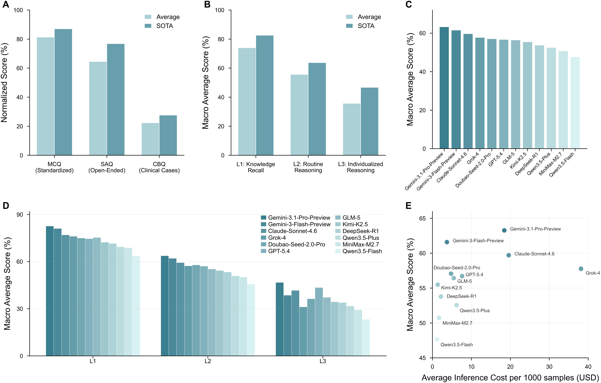

GlobalDentBench: A Multinational Benchmark for Evaluating LLM Clinical Reasoning in Dentistry with Expert Calibration
Zhao, J., Liang, J., Cai, Z., Zhang, J., Wen, Z., Deng, S., Yi, W., Luo, C., Zhang, H., Chen, J., Liu, T., Bai, Z., Zhang, Z., Singh, P., Liu, X., Li, J., Tran, N., Schwendicke, F., Jin, Z., Jin, L., Chen, L., Yang, W., Wang, B., Wang, J. & Jiang, S.
Abstract（原文）
展开 / 收起 Abstract 原文
01论文速览右侧批注 ›
先用几段话回答：这篇文章为什么要做、具体想解决什么、怎样做、最后得出了什么结论。
研究背景
现有牙科 LLM 评测大多依赖本地执业考试或窄专科的**选择题(MCQ)**，测量的是事实记忆而非真实临床所需的**基于具体病例的推断推理**。医学基准普遍显示：模型从'规范知识检索'过渡到'包含临床模糊性的开放式推理'时性能骤降；而牙科因涉及空间分析、程序化操作与长周期治疗规划，对个体化推理要求更高。这导致'考试式高分'与'真实临床安全'之间存在明显鸿沟。
研究目标
论文要回答的核心问题是：**当前前沿 LLM 在牙科临床推理上的真实可靠性与安全性究竟如何？** 具体包含三点：(1) 随着任务从事实记忆走向常规推理、再到个体化推理，模型表现如何变化；(2) 不同题型(选择题/简答/病例)与不同牙科专科之间的差异有多大；(3) 在真实病例建议中存在多大比例的**不安全(甚至不可逆伤害)风险**。
研究内容
1. **构建多国别牙科基准 GlobalDentBench**：从 6 国执业考试、权威教材、2020–2025 年 Scopus 病例报告三类来源自动化构造 8,978 道题，覆盖 14 个牙科专科、88 个国家/地区、6 大洲。 2. **用三级推理层级刻画认知难度**：将每题标注为 L1 知识记忆、L2 常规推理、L3 个体化推理，使评测按临床可解释的难度梯度展开。 3. **自动化构造 + 专家校准双保险**：六名资深牙医参与(共 297 人时)，对 MCQ/SAQ 全量专家复核(准确率 99.98%)，对 CBQ 抽审 32.89%(接受率 96.78%)；并用 rubric 化 LLM 裁判(Gemini-3-Flash-Preview，与专家一致率 98.15%)规模化评分。 4. **做风险感知评测**：对 1,590 道病例题的 19,080 条回答按 S0/S1/S2 三级安全分级，量化可逆与不可逆伤害风险。
主要结论
1. **随推理复杂度递增，性能阶梯式崩塌**：准确率从 MCQ 81.34% → SAQ 64.53% → CBQ 22.34%；按推理层级 L1 74.01% → L2 55.64% → L3 35.71%，**所有模型 L3 均低于 50%**。 2. **最佳模型与性价比**：Gemini-3.1-Pro-Preview 综合最优(宏平均 63.27%)，开源最优为 GLM-5(56.43%)；性价比最佳为 Gemini-3-Flash-Preview(61.59% @ $3.72/千次)，Grok-4 最贵($38.14)却仅 57.77%。 3. **专科间系统差异**：口腔粘膜病(OMD 63.66%)最强，正畸(Ortho 50.59%)最弱，差距 13.07 个百分点。 4. **真实病例建议 unsafe 率达 31.01%**：其中 S1(可逆伤害)26.50%、S2(不可逆/危及生命)4.51%；模型间 unsafe 率 15.97%–45.85%，正畸、牙周/种植、常规修复专科风险最高。
论文最清晰的信号不是'难度越高性能越差'这一常识，而是**风险集中在哪里**：模型能较好记忆与复现结构化知识，却在处理含模糊性、需整合患者个体信息的真实病例时不可靠，且近三分之一的病例建议存在潜在临床危害。这表明'考试式基准高分'不能直接外推为'临床可用'，在医疗部署前必须做风险感知评测与专家验证。
02原文精读右侧批注 ›
沿着原文的章节顺序，区分每一节说了什么，以及这些内容如何支撑论文的论证。
分章节总结与分析
Abstract
p.2摘要提出 GlobalDentBench：首个多国别牙科基准，覆盖 14 个专科、88 个国家/地区、6 大洲，含 8,978 道专家校验题，分 MCQ/SAQ/CBQ 三种题型与 L1/L2/L3 三级推理。六名资深牙医校准使 MCQ/SAQ 一致率 99.98%、CBQ 96.78%。评测 12 个前沿 LLM 显示性能随推理复杂度阶梯式退化(MCQ 81.34% → CBQ 22.34%；L1 74.01% → L3 35.71%)，真实病例建议 unsafe 率达 31.01%(其中 4.51% 为不可逆伤害风险)。
摘要已给出全文最核心的证据链与结论。需注意的是，31.01% 的 unsafe 率来自对 1,590 道 CBQ 的 19,080 条回答的裁判判定，其可靠性依赖 LLM-as-Judge 与 S0/S1/S2 分级标准，应结合第 2.5–2.6 与 4.4 节的方法学细节审慎解读。
Introduction
p.2引言建立研究动机：LLM 在标准化医学考试中可达专家水平，但真实临床需要管理诊断模糊、处理不完整信息、在多步不确定条件下迭代推理；牙科尤甚(空间分析 + 程序化操作 + 长周期个体化规划)。现有牙科评测多限于执照考试式 MCQ，测事实记忆而非临床推断。作者据此提出 GlobalDentBench，并概述其三大贡献：扩展题型到 SAQ/CBQ、提出可迁移的自动化构造框架、用 rubric 化裁判做可信评测。
引言的论证链(existing understanding → gap → need)清晰。一个值得注意的隐含假设是：执照考试式 MCQ 不能代表临床推理——这一前提在医学 LLM 文献中已被反复支持，但论文未给出直接对比实验来证伪'MCQ 高分即可临床可用'这一替代解释，而是用下游 CBQ 结果间接支撑。
Results
p.4结果部分(2.1–2.7)报告基准概览、题型与推理层级的性能梯度、12 个模型的横向对比、专科差异、CBQ 安全分级、构造与评测可靠性，以及一个 L3 病例研究。整体结论是：模型在标准化任务上尚可，但随开放性与病例复杂度上升而急剧退化，并在真实病例建议中存在可观的不安全比例。
结果的结构是按'性能梯度 → 模型对比 → 专科差异 → 风险 → 可靠性'展开的，逻辑自洽。需要区分两类证据：性能数字(可复算的准确率)属于 reported；而'风险集中在哪里''模型不可靠'属于对数字的 interpretation，论文在讨论中将其上升为'医疗 LLM 基本局限'，这一跃迁是合理的但仍受评测样本与裁判偏差约束。
Benchmark Overview
p.4给出 GlobalDentBench 的四个设计维度：(1) 地理覆盖 88 国/6 洲；(2) 推理层级 L1/L2/L3 的定义；(3) 14 个牙科专科分类；(4) 三种题型及其来源与数量(MCQ 3,679、SAQ 3,709、CBQ 1,590)。并说明统一协议下评测的 12 个模型(6 商业 + 6 开源)与评分方式(MCQ 精确匹配；SAQ/CBQ 用 Gemini-3-Flash-Preview 裁判)。
本节是理解后续数字的前提。题型数量分布极不均衡(CBQ 仅占 17.7%)，作者用 macro-average 来抑制分布偏差，这一点在第 2.2–2.3 节被明确采用，方法上处理得当。
Performance Disparities Across Question Type and Reasoning Complexity
p.4报告核心性能梯度：全模型聚合准确率 MCQ 81.34% > SAQ 64.53% > CBQ 22.34%；按推理层级(控制题型分布后用 macro-average) L1 74.01% > L2 55.64% > L3 35.71%，所有模型 L3 均<50%。梯度与三套数据集的来源/难度结构一致，而非仅由回答格式导致。
这是全文最关键的证据。需区分：MCQ→SAQ 的下降部分可由'开卷 vs 闭卷'解释，但 SAQ→CBQ(64.53%→22.34%)的陡降主要由'真实病例报告的歧义与冲突信息'驱动，说明模型短板在**开放式临床推理**而非文本生成格式。L3<50% 对所有模型成立，是一个很强的跨模型一致信号。
Comparative Analysis of Frontier Large Language Models
p.5横向对比 12 个模型：宏平均最优 Gemini-3.1-Pro-Preview(63.27%)，开源最优 GLM-5(56.43%)；L3 上 Claude-Sonnet-4.6 最高但所有模型仍<50%。成本-性能上，Gemini-3-Flash-Preview 性价比最佳(61.59% @ $3.72/千次)，Grok-4 最贵($38.14)仅 57.77%，说明更高成本不必然换来更好表现。
成本-性能分析有实用价值：它提示在牙科评测/部署中不必盲目选最贵模型。 caveat 是成本按官方定价与观测 token 估算，且只覆盖一次快照；不同解码/路由策略可能改变排序。模型排名在 L3 与整体不完全一致，说明'综合能力'与'最难推理'并非同一维度。
Performance Disparities Across Dental Disciplines
p.614 个专科的 macro-average 显示：口腔粘膜病(OMD 63.66%)最高，牙髓根尖病(PPD 59.62%)、颌面放射(OMR 59.44%)次之；正畸(Ortho 50.59%)、儿科(PD 51.08%)、常规修复(CP 51.92%)最低，最高与最低相差 13.07 个百分点。OMD 是所有模型的最高分专科，最低分专科多为 Ortho。
专科差异与领域知识的结构有关：粘膜病/牙髓病偏事实与影像识别，正畸/修复偏空间规划与多约束整合，后者更接近 L3 个体化推理，因而更弱。该模式跨模型一致，增强了'推理类型决定难度'这一解释的可信度。
Risk Analysis of LLM Answers in Case-Based Questions
p.6对 1,590 道 CBQ 的 19,080 条回答做 S0/S1/S2 安全分级：S0 安全 68.99%，unsafe 31.01%(S1 可逆伤害 26.50%、S2 不可逆/危及生命 4.51%)。模型 unsafe 率 15.97%–45.85%：GPT-5.4、Gemini 双雄最低，Grok-4、MiniMax-M2.7、Qwen3.5-Flash 最高。S2 排名与 S1 排名不同，说明低整体 unsafe 不等于控制好严重风险。
安全风险是论文最具临床意义的发现。关键限制：(1) 分级由裁判模型判定，S2 边界主观；(2) 4.51% 的 S2 比例虽小但绝对量(约 860 条)仍可观；(3) 模型间 S1/S2 排名不一致，提示单看整体 unsafe 率会掩盖严重风险。这与 2.6 的专科风险结构相互印证。
Reliability of Benchmark Construction and Evaluation
p.7从可靠性角度解释 unsafe 率的结构：结合 S1+S2 后，风险最高的专科是正畸(Ortho 44.30%)、牙周/种植(PP 38.78%)、常规修复(CP 38.25%)，而基础与预防牙科(BSPD 1.04%)几乎无风险。S2 却集中在全身健康/药理安全(SHPS 均值 14.15%，MiniMax-M2.7 达 28.57%)、麻醉急救(AME 8.93%)、儿科(PD 6.33%)——即可逆风险高与严重风险高的专科并不重合。
本节把'31.01% unsafe'拆成可行动的专科-严重度矩阵，是方法论上的重要贡献。值得注意的是，高 S1(如 Ortho)与高 S2(如 SHPS)分离，意味着仅凭总体 unsafe 率无法识别最危险的临床情境，评测与监管都应分别追踪两类风险。
Case Study
p.8以一个 L3 病例(66 岁男性、26 牙反复脓肿)演示 CBQ 评测流程：模型需整合牙髓、牙周、修复多因素。Gemini-3-Flash-Preview 正确识别'真性牙周-牙髓联合病变'并给出分阶段多学科方案；裁判按 5 个关键点比对得 80/100，尽管一处未对齐(额外建议探查性翻瓣排除根折)，但因未引入有害建议仍判为 S0。
案例直观展示了评测不仅看最终答案，也看中间推理与安全。但它只是一个成功案例，无法代表 31.01% unsafe 的分布；其价值在于说明评分 rubric(关键点 + 安全分级)如何运作，而非证明模型整体安全。
Discussion
p.8讨论凝练三点贡献(填补牙科评测空白、可扩展构造、可信评测)，并重申核心信号：模型在 MCQ/SAQ 尚可，在 CBQ/L3 急剧退化，说明当前 LLM 更擅长检索与复现结构化知识，在真实模糊情境下不可靠。论文将其与医学 LLM 的既有研究对照，主张'考试高分≠临床就绪'，并强调部署前需严格验证。
讨论的 interpretation 与证据一致，未过度外推。一个未充分展开的点：论文提出框架'可迁移至其他医学专科'，但全文未给出任何迁移实证，属于被声明但未验证的主张，应标记为 speculation 而非已证实贡献。
Methods
p.18方法部分(4.1–4.4)交代数据来源、自动化构造流水线、评测协议与专家参与框架。所有材料来自授权/公开资源，六名资深牙医(平均临床 6.8 年)参与迭代优化与终验，时间为 2026-02-05 至 03-25，共 297 人时。
方法学透明度较高：数据源、流水线、评测协议、专家投入均给出可审计细节。主要可复现性短板在 CBQ 原始数据因版权不公开(仅提供题名)，外部只能复现流程而不能复现数字——这是医学基准常见的版权与伦理权衡。
Data Curation
p.18说明三类题型的来源与筛选：(1) MCQ 来自澳/新/加/印/英/美官方执业考试；(2) SAQ 来自按学术影响力筛选的权威教材；(3) CBQ 来自 2020–2025 年 Scopus 高影响期刊(JADA、IJOMS 等)系统检索的病例报告。全部材料按联合国 M49 标准归属到 88 国/地区，多为 PDF/Word，进入后续流水线。
数据溯源清晰且有地理多样性设计。潜在偏差：(1) 来源以英语国家/英语期刊为主，非英语牙科知识体系覆盖存疑；(2) 地理归属在来源不明时按作者单位等启发式推断，可能引入噪声；(3) CBQ 来自已发表病例报告，可能偏向'有趣/典型'而非真实分布。
Agent Pipeline for Benchmark Construction
p.19提出三阶段自动化流水线以应对异质材料的规模化构造：阶段一文档归一化、阶段二类型感知构造、阶段三统一标注与终验。设计目标是把 PDF/图片/Office/XML 等统一为标准基准样本，并作为可迁移到其他专科的复用框架。
流水线是论文的工程核心，价值在于'type-aware'策略与内置 self-correction/质量控制。限制：(1) 对 CBQ 这类非结构化材料，生成阶段可能引入幻觉，仅靠 3 轮 self-correction 与 30% 人工审计兜底；(2) 可迁移性声明缺乏跨专科实证。其有效性由 4.4 的专家验收数字(99.98%/96.78%)间接支撑。
Stage I: Document Normalization
p.19阶段一由 Reformat Agent 归一化异质材料：对 XML 用 BeautifulSoup 保留结构，对 PDF/图片用 DeepSeek-OCR2 恢复文本，对多数文本文件用 Pandoc 转换；统一转为 markdown 并补充标题/来源/作者等文档级元数据，建立统一中间表示。
归一化是后续质量的基础。OCR 步骤(DeepSeek-OCR2)对扫描版试卷/教材的识别误差会沿流水线传播，论文未报告 OCR 准确率，是潜在的未量化误差源。
Stage II: Type-aware Benchmark Construction
p.19阶段二由 Extract Agent 按题型构造样本：内容先分块以防上下文截断；MCQ 重排为标准选项+参考答案，SAQ 抽取问答对，CBQ 从病例叙述生成临床问题并同时抽取 5 个关键点。每样本最多 3 轮 self-correction，CBQ 验证更严格(忠实性、需临床推理、无歧义可答)。
CBQ 同时产出的 5 个关键点是后续 rubric 评分的基础，设计合理。self-correction 上限 3 轮、失败即丢弃，可能系统性剔除'难生成但合理'的样本，造成轻微的选择偏差，但有利于保真。
Stage III: Unified Tagging and Final Verification
p.19阶段三由 Tag Agent 按'牙科专科 + 推理层级'双维标注：两轮独立预测一致则保留，否则触发第三轮多数投票。随后 self-correction 终验(忠实性、标签一致性、满足构造标准)，失败重生成最多 3 轮；资深牙医做最终质量保障。
多轮一致性投票降低了单轮标注噪声，但标签本质仍是模型生成+专家抽检，并非全量专家标注，边界题(如 L2/L3 临界)的标签可信度低于全专家标注。这是 2.6 之外另一个'标签噪声'来源。
Evaluation Protocol
p.20评测按题型定制：MCQ 仅输出最终选项并精确匹配；SAQ 由裁判模型二元判分；CBQ 用同一裁判但改为 5 关键点×20 分的 rubric 计分(满分 100)，并叠加 S0/S1/S2 安全分级。统一模板与 temperature=0.1，无模型特定调优；裁判选 Gemini-3-Flash-Preview(一致性稳定且成本低)。评测 12 个前沿模型(商业+开源各 6)。
CBQ 的 rubric 打分比单纯对错更可解释，安全分级使评测具备风险感知。主要方法论风险在 LLM-as-Judge：即便裁判与专家 98.15% 一致，其在 S2(不可逆伤害)这类高风险判定上的误差代价最高，且裁判自身也可能犯错——作者用专家校准部分缓解，但未给出 S2 的裁判-专家专项一致率。
Expert-in-the-Loop Framework
p.21说明六名 board-certified 牙医(平均 6.8 年)的全流程参与：数据来源认证与分类法制定、agent 流水线迭代优化(MCQ/SAQ 全量复核达 99.98%；CBQ 30% 抽审由 89.10% 提升至 96.78%)、评测框架校准(5 个候选裁判中 Gemini-3-Flash-Preview 专家接受率最高 98.15%，牙医互评 96.67%)。总投入 297 人时(33 个工作日，人均 1.5 小时/日)。
Expert-in-the-Loop 是'可信'主张的支柱。两点需注意：(1) 97.88% 的 Kimi-K2.5 与 94.05% 的 Doubao 也接近专家，说明裁判选择空间大，但不同裁判可能改变 CBQ 分数绝对值；(2) 297 人时是显著成本，意味着该范式对小团队复现门槛较高，除非自动化标注足够稳健。
关键引文
论文图表




Zotero 高亮
Zotero 笔记
03参考意义右侧批注 ›
把论文放回实际研究和复现决策中：它有什么价值，代价和风险是什么，还留下哪些问题。
风险与局限
- MCQ、SAQ、CBQ 的来源、开放性和难度同时变化，题型比较存在混杂。
- SAQ/CBQ 的评分依赖自动判别，专家一致性不能消除系统性评分偏差。
- 从题库表现到真实临床获益或安全部署仍有外部效度缺口。
- 提取文本未给出完整的训练数据污染审计与跨国抽样比例，相关可复现性判断受限。
主要边界在于：(1) CBQ 数据因版权不公开，仅提供题名，外部复现受限；(2) LLM-as-Judge 即便与专家高度一致仍是近似，可能携带系统性偏差；(3) 仅 30% 的 CBQ 经人工审计，70% 未经专家逐条核验；(4) 评测模型为 2026 年快照，结论时效性强；(5) 地理归属与推理层级标签部分由模型自动标注，存在噪声。
成本与复现条件
复现需要取得受许可或公开来源材料、实现文档规范化和题型生成代理、建立题目—来源核验及标签体系，并投入牙科专家进行流程校准与终验。文中报告 6 位资深牙医在 2026-02-05 至 2026-03-25 贡献 297 人时；自动评分还依赖指定的判别模型和量规。
与我研究的关联
与项目中关于医学基准与真实临床案例评测的阅读线索直接相关。它可为设计多层级任务、把病例风险与正确性分开报告、以及校准自动判别器时的专家抽样方案提供具体参照。
待追问
- 在固定题型内控制临床信息量后，L1–L3 的性能差异是否仍然相同？
- 不同判别模型、人工盲评和患者结局会如何改变安全率估计？
- 跨国题源是否在语言、专科和资源水平上均衡代表真实临床？
我的笔记
阅读活动时间为基于 Zotero 标注时间戳的近似值，并非真实阅读时长。